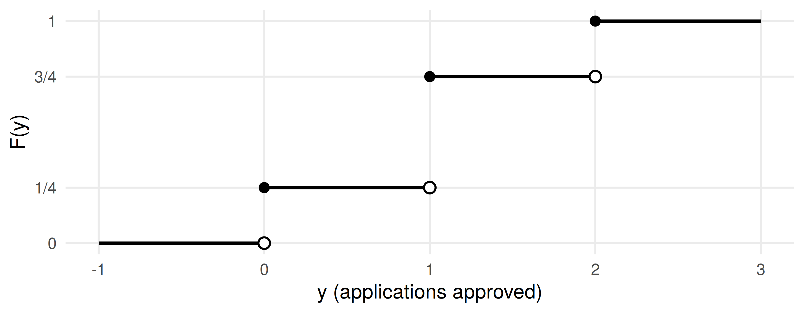
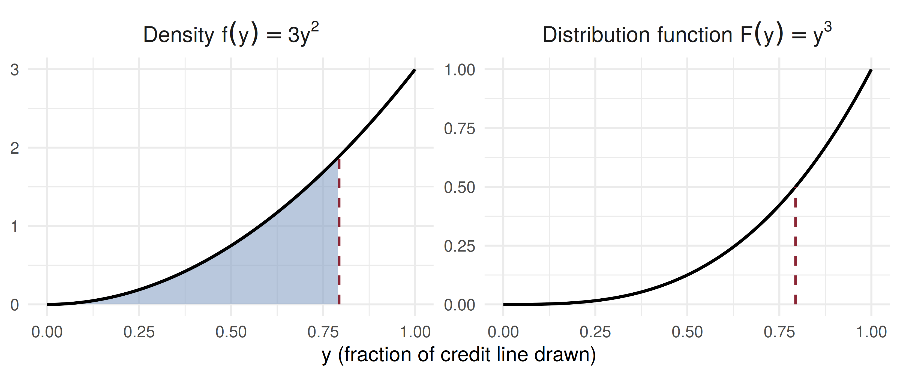

c P_le_3 P_1_to_3
0.09375 0.84375 0.68750 median phi_90
2.0000 3.2168 Continuous Random Variables: Distribution and Density Functions
ADA University, School of Business
Information Communication Technologies Agency, Statistics Unit
2026-09-24
By the end of this lecture, you will be able to:
Write the distribution function \(F(y) = P(Y \le y)\) of any random variable, discrete or continuous
Explain why \(P(Y = y) = 0\) for a continuous \(Y\), and what replaces a probability function
Move between a density \(f(y)\) and its distribution function \(F(y)\) by integrating or differentiating
Compute \(P(a \le Y \le b)\) as an area under \(f(y)\), and find the constant that makes \(f(y)\) a density
Find a quantile \(\phi_p\), such as the median settlement time of a payment
Wackerly §§4.1–4.2
Friday closed Chapter 3 with a map of the discrete models: name the counting mechanism, pick the model, read off \(E(Y)\) and \(V(Y)\). Every one of them assigned a probability \(p(y)\) to each value.
Today we leave counts behind. The time a payment takes to settle, the share of a credit line a firm draws, a day’s move in the exchange rate: these take any value in an interval.
For those, \(p(y)\) cannot work. Chapter 4 replaces it with two functions, \(F(y)\) and \(f(y)\), and today is about both.
The payments desk’s problem
A Baku bank sends cross-border transfers that settle anywhere between 0 and 4 hours after release. The desk promises corporate clients settlement within 3 hours.
What is the probability a transfer settles in exactly 2 hours? And in at most 3?
The first question has the surprising answer zero, and yet the second has a perfectly good answer. By the end of today we will compute it: \(27/32 \approx 0.844\).
Definition 4.1
Let \(Y\) denote any random variable. The distribution function of \(Y\), denoted by \(F(y)\), is such that \(F(y) = P(Y \le y)\) for \(-\infty < y < \infty\).
Theorem 4.1: Properties of a Distribution Function
Note the word any: \(F(y)\) exists for discrete variables too.
Example 4.1, in a loan office: two SME applications, each approved independently with probability \(1/2\). \(Y\) = number approved, so \(p(0) = 1/4\), \(p(1) = 1/2\), \(p(2) = 1/4\) and, for instance, \(F(1.5) = 1/4 + 1/2 = 3/4\).

The staircase jumps at 0, 1, 2 by exactly \(p(0)\), \(p(1)\), \(p(2)\). It is flat in between because those values carry no probability.
Definition 4.2
A random variable \(Y\) with distribution function \(F(y)\) is said to be continuous if \(F(y)\) is continuous, for \(-\infty < y < \infty\).
Consequence. If \(Y\) is continuous, \(P(Y = y) = 0\) for every real \(y\). A point with \(P(Y = y_0) = p_0 > 0\) would put a jump of size \(p_0\) into \(F\). So a transfer settling in exactly 2.000… hours has probability zero, while one settling between 2 and 3 hours does not.
Definition 4.3
Let \(F(y)\) be the distribution function for a continuous random variable \(Y\). Then \(f(y) = \dfrac{dF(y)}{dy}\), wherever the derivative exists, is called the probability density function for \(Y\). Equivalently, \(F(y) = \int_{-\infty}^{y} f(t)\, dt\).
Theorem 4.2: Properties of a Density Function
Example 4.3, re-set. \(Y\) is the fraction of its approved credit line a corporate client has drawn at month-end: \[f(y) = \begin{cases} 3y^2, & 0 \le y \le 1, \\ 0, & \text{elsewhere.} \end{cases}\]
Integrate from \(-\infty\) up to \(y\). Below 0 nothing accumulates; above 1 everything already has: \[F(y) = \begin{cases} 0, & y < 0, \\ \int_0^y 3t^2\, dt = y^3, & 0 \le y \le 1, \\ 1, & y > 1. \end{cases}\]
So \(P(Y \le 0.5) = 0.5^3 = 0.125\): only one client in eight uses half the line or less. Clients draw heavily.

The shaded area on the left, 0.5, is the height of \(F\) on the right at the same \(y\). And \(f(1) = 3\): a density may exceed 1; \(F\) never does.
Definition 4.4
Let \(Y\) denote any random variable. If \(0 < p < 1\), the \(p\)th quantile of \(Y\), denoted by \(\phi_p\), is the smallest value such that \(F(\phi_p) = P(Y \le \phi_p) \ge p\). If \(Y\) is continuous, \(\phi_p\) is the smallest value such that \(F(\phi_p) = p\).
Credit line: solve \(\phi_p^3 = p\).
Theorem 4.3
If the random variable \(Y\) has density function \(f(y)\) and \(a < b\), then the probability that \(Y\) falls in the interval \([a, b]\) is \[P(a \le Y \le b) = \int_a^b f(y)\, dy = F(b) - F(a)\]
Because \(P(Y = a) = P(Y = b) = 0\), the endpoints do not matter: \[P(a < Y < b) = P(a \le Y < b) = P(a < Y \le b) = P(a \le Y \le b)\] This is false for discrete variables. In the loan office, \(P(0 < Y < 2) = 1/2\) but \(P(0 \le Y \le 2) = 1\).
Examples 4.4–4.5, re-set. Settlement time \(Y\) (hours) has \(f(y) = c\,y(4 - y)\) for \(0 \le y \le 4\), zero elsewhere. Step 1: find \(c\). \[\int_0^4 c(4y - y^2)\, dy = c\left[2y^2 - \frac{y^3}{3}\right]_0^4 = c\left(32 - \frac{64}{3}\right) = \frac{32}{3}c = 1 \;\Rightarrow\; c = \frac{3}{32}\]
Step 2: the distribution function. For \(0 \le y \le 4\), \(F(y) = \dfrac{6y^2 - y^3}{32}\).
Step 3: read off the desk’s answers. \[P(Y \le 3) = \frac{54 - 27}{32} = \frac{27}{32} = 0.8438, \qquad P(1 \le Y \le 3) = \frac{27}{32} - \frac{5}{32} = 0.6875\] The 3-hour promise is broken for about one transfer in six, \(5/32 = 0.156\).
c P_le_3 P_1_to_3
0.09375 0.84375 0.68750 median phi_90
2.0000 3.2168 The median is 2 hours, by symmetry. Nine transfers in ten settle within 3.22 hours.
Plot.plot({
width: 1150,
height: 320,
marginLeft: 78,
marginBottom: 58,
style: {fontSize: "18px"},
x: {label: "Settlement time y (hours)", domain: [0, 4], ticks: [0, 0.5, 1, 1.5, 2, 2.5, 3, 3.5, 4]},
y: {label: "Density f(y)", domain: [0, 0.4], ticks: [0, 0.1, 0.2, 0.3, 0.4], tickFormat: ".1f"},
marks: [
Plot.areaY(shaded, {x: "y", y: "f", fill: "#8ba3c7", fillOpacity: 0.7}),
Plot.line(grid, {x: "y", y: "f", stroke: "#14130f", strokeWidth: 2.5}),
Plot.ruleX([b], {stroke: "#8b2635", strokeWidth: 2, strokeDasharray: "5 4"}),
Plot.ruleY([0])
]
})Example 4.2 runs the other way: start from \(F\) and differentiate. A branch’s teller service time \(Y\) (minutes) has \[F(y) = 1 - e^{-y^2/50}, \quad y \ge 0 \qquad \Rightarrow \qquad f(y) = \frac{dF(y)}{dy} = \frac{y}{25}\,e^{-y^2/50}, \quad y \ge 0\]
No integral was needed: when \(F\) is given, every probability is a subtraction.
The daily move \(Y\) (in %) of the EUR/AZN rate is modelled by \[f(y) = 1 - |y|, \quad -1 \le y \le 1, \qquad 0 \text{ elsewhere.}\]
Four minutes, in pairs:
Check that \(f\) is a density. (Sketch it first.)
Find \(P(|Y| > 0.5)\), the chance of a move of more than half a percent.
Find \(\phi_{.95}\). And what is \(P(Y = 0)\), where \(f\) is highest?
\(f \ge 0\), and the graph is a triangle with base 2 and height 1: area \(= \tfrac{1}{2} \times 2 \times 1 = 1\).
Each tail beyond \(\pm 0.5\) is a triangle with base and height \(0.5\), area \(0.125\). So \(P(|Y| > 0.5) = 0.25\).
And \(P(Y = 0) = 0\). \(f(0) = 1\) is a height, not a probability; probability lives only in areas.
The settlement density has \(f(2) = 0.375\). What is \(P(Y = 2)\)?
A density is \(f(y) = cy\) for \(0 \le y \le 4\) and \(0\) elsewhere. What is \(c\)?
The credit-line fraction has \(F(y) = y^3\) on \([0, 1]\). What is the probability a client has drawn more than half the line?
| Statement | |
|---|---|
| Definition 4.1 | \(F(y) = P(Y \le y)\), for any random variable |
| Theorem 4.1 | \(F(-\infty) = 0\), \(F(\infty) = 1\), \(F\) nondecreasing |
| continuous \(Y\) | \(P(Y = y) = 0\) for every \(y\) |
| Definition 4.3 | \(f(y) = dF(y)/dy\), \(\;F(y) = \int_{-\infty}^{y} f(t)\,dt\) |
| Theorem 4.2 | \(f(y) \ge 0\), \(\;\int_{-\infty}^{\infty} f(y)\,dy = 1\) |
| Theorem 4.3 | \(P(a \le Y \le b) = \int_a^b f(y)\,dy = F(b) - F(a)\) |
| Definition 4.4 | \(F(\phi_p) = p\), \(Y\) continuous |
\(F(y) = P(Y \le y)\) describes every random variable; a discrete one has a staircase, a continuous one has none
For continuous \(Y\), single points carry probability zero, so endpoints never matter
The density \(f\) is the derivative of \(F\); \(F\) is the accumulated area under \(f\)
A density is a height, not a probability, and may exceed 1
Probabilities are areas, \(F(b) - F(a)\); quantiles invert \(F\)
Wackerly, 7th edition
§4.2: Exercises 4.1 – 4.19; start with 4.8, 4.11, 4.12 and 4.14
Exercise 4.7 is the discrete-endpoints warning from Theorem 4.3, worked from the binomial table
Redo the settlement example with the deadline moved to 2.5 hours: how often is the promise broken?
Week 9, Problem Set 1 is open now and closes Sunday 15 November at 23:59 on WeBWorK, covering §§4.1–4.2.
Next class: 7 November, expected values for continuous random variables, and our first named continuous model, the uniform distribution (Wackerly §§4.3–4.4).
Dr. Samir Orujov
📧 sorujov@ada.edu.az
🏢 Building D, Room D325
🕓 Office hours: Wednesday, 16:00 – 18:00
Slides and readings: sorujov.net/teaching
A distribution function can have jumps and rise smoothly in between. What kind of variable would that describe in insurance?
If \(f(y) = 3y^2\) on \([0,1]\), why is \(f(1) = 3\) not a contradiction of \(P \le 1\)?
The bank reports the 90th percentile of settlement time rather than the mean. Why might a client prefer that number?

Mathematical Statistics I - Continuous Random Variables